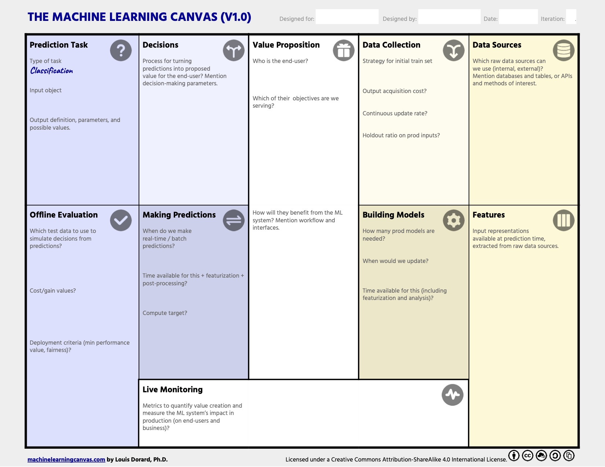

flowchart LR
subgraph planning[Foundational Planning]
direction TB
subgraph p1[Understand the Business Problem]
end
subgraph p2[Determine ML Suitability]
end
subgraph p3[Define Performance Metrics]
end
subgraph p4[Understand the Potential Value]
end
subgraph p5[Understand Technical Requirements]
end
end
A[Stakeholders] --> planning
B[Business Requirements] --> planning
C[Data Scientists / ML Engineers] --> planning
D[End Users] --> planning
p1 --> p2 --> p3 --> p4 --> p5
planning --> building[ML System Development] --> planning
2 Before We Build
Reading Time: 35-50 minutes
Building an effective machine learning (ML) system requires more than just technical knowledge and model-building skills. The success of an ML project depends heavily on the foundational planning that happens long before the first line of code is written or the first dataset is processed. This planning phase is essential to ensuring that the project aligns with the business goals, addresses the right problem, and is both technically feasible and valuable. In this chapter, we’ll explore the key considerations and actions to take before starting the development of an ML system.
2.1 Working with Stakeholders to Understand the Business Problem
The first step in any ML project is to collaborate closely with stakeholders to fully understand the business problem. This stage is critical because a thorough understanding of the problem directly impacts the translation of business needs into a solvable analytics problem, helps scope the project realistically, and ensures the ML system will truly meet organizational goals. Stakeholders include anyone with a vested interest in the project’s success—such as executives, department leads, data science teams, IT, and end users. Each group brings a unique perspective, and understanding their needs and expectations provides clarity on objectives, potential constraints, and the broader impact of the solution.
Effective communication with stakeholders helps to align everyone on the project’s purpose and desired outcomes. By having these early conversations, ML practitioners gain insight into business priorities, potential data requirements, and assumptions being made about data availability, user behavior, and expected outcomes. Common assumptions that come to light in these initial meetings might include beliefs about data quality or completeness, end-user expectations of functionality, or even implicit views on the model’s potential accuracy and impact. Identifying and addressing these assumptions early on prevents misalignment and reduces the risk of costly adjustments later in the project.
To gain a comprehensive understanding of the business problem, ML practitioners should consider key questions with stakeholders, such as:
- What specific problem are we trying to solve?
- What are the business objectives associated with addressing this problem?
- Who will use the ML system, and what actions or decisions will it facilitate?
- What are the potential risks or consequences if the system produces inaccurate or unintended results?
- Are there existing solutions or processes in place, and what are their limitations?
These questions help not only to clarify the business goals but also to highlight how the problem should be reframed into an analytics problem. For instance, a high-level business problem like “improving customer retention” can translate into an analytics problem focused on predicting customer churn and identifying key factors contributing to it. Defining the problem at this level makes it easier to identify relevant data, narrow down model requirements, and set realistic goals.
Additionally, early discussions often uncover essential requirements and constraints, such as data dependencies, privacy concerns, or specific regulatory requirements. By clarifying these aspects, ML teams can make more informed decisions on technical design, data preprocessing, and timeline estimation. Furthermore, gaining a clear understanding of the end-users’ needs helps in defining how the ML system should be integrated into existing workflows, ensuring the solution is not only technically robust but also user-friendly and practical.
In summary, investing time upfront to deeply understand the business problem and address underlying assumptions results in a more targeted, relevant ML solution. This shared understanding among stakeholders lays the groundwork for a smooth translation of business objectives into technical requirements, helping to scope the project effectively and set it up for long-term success.
Isn’t this a project manager responsibility?
Data scientists should be involved in the early planning process of an ML project because their expertise in data and analytics enables them to assess the feasibility of proposed solutions, clarify data requirements, and identify potential technical challenges. While some ML practitioners may balk at including planning, communication, brainstorming, and other project-management-focused elements in discussions on ML projects, these early stages are often where critical project alignment occurs. In my experience, the most successful projects have involved ML team leads working closely not only with project managers and other team leads but also with representatives from the department requesting the solution. Data scientists bring essential knowledge about data limitations, model requirements, and potential roadblocks that might otherwise go unnoticed. Their involvement helps refine the project’s scope to align with both the business goals and technical realities, setting realistic expectations and paving the way for a solution that is both effective and feasible. This collaborative approach during planning ultimately saves time, enhances clarity, and boosts the likelihood of delivering a meaningful, successful ML solution.
2.2 Determining if the Problem Requires an ML Solution
Now that we understand the importance of working with stakeholders to fully grasp the business problem, the next step is to translate the business problem into an analytics problem. This process will help us determine whether machine learning (ML) is the right approach to address the issue. ML can be a powerful tool, but it’s not always the best solution. Determining if ML is suitable requires thoughtful consideration, as unnecessary ML implementation can lead to wasted resources, increased complexity, and maintenance challenges.
Key Considerations to Determine ML Suitability
Determining if a problem requires an ML solution involves assessing whether the business objectives demand certain characteristics that ML can uniquely provide.
Some essential considerations include:
Learning Complex Patterns from Data
ML excels when the solution requires identifying complex, often non-linear relationships within data that are difficult to capture using rules-based or traditional statistical approaches. If the problem involves intricate patterns that need to be learned from large volumes of data, ML may be appropriate. For example, ML can be effective at analyzing the complex and non-linear relationships between a customer’s purchase history, browsing behavior, and demographic characteristics to generate personalized product recommendations.
Availability of Quality Data
ML solutions require substantial and high-quality data for training and testing. Without sufficient data, the model cannot learn the patterns or features necessary to make accurate predictions. Data availability should include not only a large enough sample size but also a diverse dataset that represents the full range of scenarios the model will encounter in production. If quality data is unavailable, ML is unlikely to perform well and may not be worth pursuing.
Making Predictions on Unseen Data
ML is suitable for problems where we need the system to make predictions on new, unseen data that will continue to arrive over time. For instance, in fraud detection, the goal is for the system to recognize fraudulent behavior in real-time as new transactions occur. This is an inherently predictive task and well-suited to ML, where models trained on historical fraud data can be applied to identify anomalies in new transactions.
ML is Not Always the Answer
Machine learning is a powerful tool, but it’s not a one-size-fits-all solution. Yet, in today’s fast-paced tech landscape, it’s common for business leaders to latch onto popular trends like ML, AI, and automation, believing that these technologies can solve a wide range of problems or offer an innovative edge. However, the reality is that many problems don’t require the complexity or resources of an ML system and can actually be addressed more effectively with simpler approaches. Below are examples of problems that often don’t meet the suitability criteria for ML, illustrating why a different solution may be more appropriate.
Rule-Based Decision Systems
If a problem can be solved with straightforward rules or conditions, then ML is likely unnecessary. For example, an e-commerce site offering a standard discount based on membership level (e.g., 10% off for premium members) may not need a predictive model to calculate discounts. A simple rule-based system is faster to implement, more interpretable, and easier to maintain. Business leaders sometimes assume that ML will increase personalization or provide better insights, but in some cases, it may only add complexity without significant, meaningful benefits.
Basic Data Retrieval and Filtering
When a task involves retrieving specific records or filtering data based on fixed criteria, ML is overkill. For instance, if a business wants a list of customers who made a purchase within the last month, a structured query in a database will suffice. ML could add unnecessary processing time, reduce transparency, and complicate data workflows without providing any added value. Leaders may be drawn to the idea of “automating data processes with ML,” but it’s critical to recognize that traditional data querying and reporting tools are often more efficient and will suffice when the goal is to simply slice and dice our data.
Static Reporting and Descriptive Analytics
ML is valuable for uncovering patterns, making predictions, or adapting to new data, but if the goal is simply to summarize historical data or calculate aggregate statistics (e.g., total sales last quarter or average customer lifetime value), traditional data analysis tools are more suitable. ML brings no additional value to tasks that involve reporting known facts. Although ML may sound impressive, using it for simple reporting can lead to unnecessary costs in computation, maintenance, and monitoring.
Tasks with Deterministic Outputs
When a problem has predictable, deterministic outputs based on clear rules, ML can be redundant. For example, payroll tax calculation, which follows specific formulas, does not require a model to “learn” the process. Hard-coded logic or rule-based systems are not only more accurate in such cases but also eliminate potential errors introduced by an ML model. Business leaders sometimes believe that ML will “future-proof” deterministic tasks, but simpler systems are usually more reliable, cost-effective, and transparent.
Heavily Regulated Decisions Requiring Full Transparency
In industries such as finance or healthcare, strict regulations often require full transparency for every decision, making ML—especially complex models—an unsuitable choice. For instance, mortgage approvals based on a set of criteria are better handled by rules-based systems to ensure regulatory compliance and easy interpretability. While ML can provide valuable insights, its lack of interpretability in some models makes it challenging to justify for highly regulated tasks. Business leaders may be drawn to ML’s perceived sophistication, but in some cases, a rules-based approach may be more practical and reliable.
These examples, although not comprehensive, highlight the importance of carefully evaluating whether ML is truly the right tool for the job. ML can be ideal when there’s a need to learn from complex patterns in data, make predictions on new data, or adapt dynamically over time. However, using ML for problems that don’t meet these criteria or have additional concerns as mentioned above, can waste resources, reduce transparency, and increase project complexity. Recognizing when a simpler method will be more effective is a critical skill for data scientists and ML practitioners. Avoiding unnecessary ML solutions allows teams to focus their resources where they will add the most value, while helping business leaders make more informed, strategic technology decisions.
Pitfalls of Using ML Unnecessarily
Using ML when it’s not needed can create more problems than it solves. ML is powerful but also complex, requiring specialized skills, infrastructure, and ongoing maintenance. When ML is applied unnecessarily, organizations risk:
Increased Complexity and Maintenance Costs
ML systems require regular monitoring, retraining, and validation to ensure they remain accurate and reliable. For example, if an ML model is deployed to handle a task that could be addressed with simple rules, the organization may end up dedicating time and resources to monitor and maintain an over-engineered solution that adds little value. Traditional software solutions often require far less maintenance and are more stable over time.
Reduced Interpretability and Transparency
ML models, especially complex ones like neural networks, can be difficult to interpret. In situations where transparency is crucial—such as compliance with regulations or gaining end-user trust—a rules-based approach might be preferable. Using ML without necessity can lead to resistance from stakeholders who need clear explanations for the system’s outputs.
Waste of Time and Resources
Developing an ML system demands resources for data preparation, model selection, and deployment, as well as ongoing maintenance and infrastructure support. If the problem does not require ML, these resources could be better spent on other areas, such as enhancing customer experience or improving data quality.
Potential for Errors and Misinterpretations
ML models are not infallible and can produce unexpected or incorrect results, especially when faced with data outside their training set. For example, if an ML model is applied to a problem that is straightforward or deterministic, it may introduce unnecessary variability or errors, which could lead to costly mistakes. For example, a recommendation system that misclassifies products might negatively impact user experience and decrease trust in the system.
2.3 Defining Performance Metrics for the ML System
Establishing comprehensive performance metrics is critical for evaluating how effectively an ML system solves the intended business problem. Defining these metrics early not only provides a target for model performance but also ensures alignment between technical teams and business stakeholders. Performance metrics serve as both a development benchmark and a standard for continuous monitoring in production, helping teams maintain an effective and valuable ML system over time.
A robust approach to performance metrics includes:
- Model performance metrics which measure predictive accuracy and reliability
- System performance metrics which gauge how well the overall ML system operates in a real-world environment
- Business performance metrics which measure the impact the ML system provides to the business.
flowchart LR
subgraph ML[ML System]
direction BT
subgraph p0[Overall System Performance]
end
subgraph tech[Technical performance]
subgraph p1[Model performance metrics]
end
subgraph p2[System performance metrics]
end
end
subgraph p3[Business performance metrics]
end
p1 --> p0
p2 --> p0
p3 --> p0
end
By incorporating all three, ML practitioners can ensure that the system is not only technically accurate but also capable of meeting the demands of production use and drives measurable improvements for the business. Let’s dive into each category in more detail.
Technical Performance Metrics
Technical performance metrics are essential for evaluating both the model’s accuracy and the system’s operational efficiency. These metrics allow teams to optimize not only the predictive power of the model but also its usability within a production environment. By considering both model and system performance metrics, teams can ensure the ML system is not only accurate but also performant, reliable, and capable of meeting operational requirements in production.
Model Performance Metrics
These metrics evaluate the accuracy and reliability of the ML model in making predictions. These metrics include common metrics you likely have heard of before if you’ve done any ML tasks such as mean squared error, \(R^2\), and mean absolute error for regression problems; cross-entropy, gini index, precision, and recall for classification problems; or BLEU, BERTScore, and perplexity for large language models. The choice of metric depends on the type of ML task (e.g., classification, regression) and the consequences of different kinds of errors.
Further reading: Selecting the Right Metric for evaluating Machine Learning Models - Part 1, Part 2
System Performance Metrics
While model accuracy is critical, it’s equally important to assess how well the overall ML system functions in real-world conditions. These metrics track the system’s efficiency, responsiveness, and reliability, ensuring that it can handle production demands. Metrics we often consider to measure system performance include:
Latency: Measures the time required for the system to make a prediction once data is available. Low latency is critical in real-time applications like fraud detection and autonomous vehicles. Imagine a pedestrian steps out in front of an autonomous vehicle, there needs to be nearly zero time (or nearly no latency) between the car’s ML system taking in that input and making a prediction to stop otherwise the consequence will be catostrophic! 1
Throughput: Indicates the number of predictions the system can process per unit of time. High throughput is essential for large-scale applications, such as recommendation systems used by Netflix and Spotify. For example, Netflix has around 280 million customers that they need to produce recommendation predictions for on a daily to weekly basis. 2
Uptime: Tracks the percentage of time the system is fully operational. Uptime is especially important for mission-critical systems, where outages can disrupt service and lead to lost revenue.
Scalability: Assesses the system’s ability to maintain performance as user demand or data volume increases, especially while needing to maintain real-time inference requirements. For example, imagine how user demand for Amazon surges on Black Friday! 3
Resource Utilization: Tracks CPU, memory, and GPU usage to ensure efficient resource allocation, particularly relevant for cloud-based ML systems. Efficient resource utilization can significantly reduce costs, as discussed in Ramesh et al., 2020.
Considering both model and system performance metrics enables teams to build ML systems that are not only accurate but also highly responsive, efficient, and reliable in a production environment.
Business Performance Metrics
While technical metrics are essential for evaluating the functionality of the ML system, business metrics ensure that the ML system drives meaningful impact for the organization. These metrics translate technical outputs into measurable business outcomes, aligning the ML system with the broader organizational goals. Some examples follow.
Revenue Impact
For systems designed to drive sales or conversions, revenue-focused metrics quantify effectiveness. For example:
- Incremental Revenue: measures the additional revenue generated by the ML system compared to a baseline. This can demonstrate the impact of a recommendation system on customer purchases (McKinsey, 2018).
- Conversion Rate: measures the percentage of users who complete a desired action after interacting with the ML system (e.g., making a purchase after receiving a recommendation).
Operational Efficiency
For applications focused on cost reduction or improving efficiency, business will tend to use metrics that capture the system’s ability to streamline processes such as:
- Cost Savings: measures the reduction in operational costs achieved by using the ML system, such as fewer maintenance visits with predictive maintenance models (Deloitte, 2020).
- Process Time Reduction: measures the time saved in completing a process using the ML system, relevant in areas such as automated customer support ticket resolution (IBM, 2019).
Customer Engagement
For ML systems that serve customers directly, engagement metrics help gauge relevance and user experience. For example:
- Click-Through Rate (CTR): measures the percentage of users who engage with personalized content or recommendations. CTR is a common metric for digital content recommendations (Covington et al., 2016).
- User Retention Rate: measures the percentage of users who continue to engage with the platform over time, providing a longer-term view of the system’s relevance.
Accuracy in High-Stakes Decisions
For applications in areas like healthcare or finance, additional metrics measure the system’s ability to make accurate, high-impact decisions. For example:
- Reduction in Error Rates for High-Risk Cases: measures the reduction in error rates (false-positives or false-negatives) in high-stakes predictions (e.g., fraud detection), which can demonstrate the value of the ML system in risk mitigation (Fawcett & Provost, 1997).
- Compliance and Risk Management Impact: measures the system’s role in meeting regulatory standards and reducing compliance risks, especially critical in regulated industries (EU GDPR, 2018).
By defining and monitoring both technical and business metrics, ML teams can ensure their system is effective from both a technical and strategic perspective, delivering real business value.
Best Practices for Implementing Performance Metrics
Successfully implementing performance metrics requires thoughtful integration into the ML system lifecycle. Here are some best practices commonly used to make metrics more effective. Later chapters will dive into the best practices focused on monitoring and setting thresholds and alerts.
Set Benchmarks and Targets: Establish target values for each metric based on baseline performance, industry standards, and stakeholder expectations. Benchmarks help set realistic goals for model and system improvement (Sculley et al., 2015).
Use Multiple Metrics for a Holistic View: Relying on a single metric can lead to misleading conclusions. Using a combination of metrics—such as precision and latency, or recall and business impact—provides a balanced understanding of performance (Saito & Rehmsmeier, 2015).
Monitor Metrics Continuously: Performance metrics should be monitored throughout the model lifecycle, including in production. Continuous monitoring helps detect issues like data drift or system degradation (Breck et al., 2017).
Set Thresholds and Alerts: Define acceptable thresholds for critical metrics and set up alerts if the system’s performance falls below these levels. This allows for quick intervention to resolve potential issues before they impact users or business outcomes.
Regularly Re-Evaluate Metrics: As business needs and data sources evolve, so should the metrics. Periodic re-evaluation ensures that metrics remain relevant and continue to align with the organization’s priorities.
2.4 Understanding the Potential Value of a Solution
Before embarking on building an ML system, it is essential to evaluate the potential value that the solution will bring to the organization. Understanding this value helps justify the investment of time, resources, and budget, and ensures that the ML system aligns with the organization’s business objectives. Evaluating potential value involves asking the right questions, considering both tangible and intangible benefits, and aligning with stakeholder priorities to secure buy-in.
Evaluating Impact on Business Objectives
The success of an ML system is ultimately measured by its impact on business objectives. By evaluating how the system will improve key metrics — whether increasing revenue, reducing costs, enhancing customer satisfaction, or improving operational efficiency — teams can prioritize the features and use cases that will generate the greatest return on investment. The goal is to clearly articulate how the ML solution will contribute to the broader goals of the business, whether it’s through improved decision-making, optimized processes, or creating better customer experiences.
Questions to Estimate and Define the System’s Value
To estimate and define the value of an ML system, it’s useful to ask the following questions:
How Will the Solution Improve Business Outcomes? Consider the specific business outcomes that the ML system is intended to influence. For example, will a recommendation system increase sales by suggesting more relevant products to customers? And if so, what does the business reasonably expect those incremental sales to equate to? Or maybe the improved recommendation system will be able to make more time relevant predictions based on today’s trends or news, which could increase daily active users which could increase potential ad revenue. Or maybe the improved recommendation system is designed to reduce customer churn, which could lead to lower new customer acquisition costs. Answering these question helps determine just how the ML system is expected to benefit the organization and if the potential benefits justify the investment and ensures the solution is well-targeted.
What Are the Tangible and Intangible Benefits? When evaluating the potential value, it’s important to look beyond the immediate financial benefits. Tangible benefits, such as cost savings, increased revenue, or reduced processing time, are easier to quantify and often form the basis for return on investment analyses. However, intangible benefits, like improved customer satisfaction, increased user engagement, enhanced employee productivity, or reduced risk, are equally important for long-term success but not as easy to quantify. For example, a fraud detection model may not only save money but also enhance customer trust—an intangible yet valuable outcome for the business. Although these are difficult to quantify, it is important to identify these potential benefits and determine if there is a way to quantify and track them.
Aligning Value Assessment with Stakeholder Priorities
To secure buy-in, it’s critical to align the value assessment with stakeholder priorities. This involves understanding the goals and pain points of various stakeholders and clearly articulating how the ML solution addresses them. Stakeholders, such as business executives, team leads, and end users, each have different perspectives on what constitutes value. By tailoring the value assessment to address these perspectives, ML practitioners can better communicate the expected benefits and ensure everyone is aligned on the importance of the project.
Involving stakeholders in this value assessment also provides an opportunity to identify potential risks, set realistic expectations, and agree on success criteria from the outset. When stakeholders see how the solution directly supports their goals, they are more likely to support the project and allocate the necessary resources to ensure its success.
Understanding and clearly articulating the potential value of the ML solution lays a strong foundation for the project. It ensures that the system is designed to address the right problem, prioritizes outcomes that matter most to the business, and secures the support needed for successful development and deployment.
2.5 Understanding Technical Requirements to Determine Feasibility
Before building an ML system, it’s crucial to assess the technical requirements to determine the feasibility of the project. Defining these requirements upfront helps ensure that the solution is practical, achievable, and that the necessary resources are available.
It’s important to note that you will not have complete information on the requirements that follow. However, getting as much understanding upfront can help drive key decisions to mitigate risks, and set the foundation for a successful project early in the process.
Technical requirements span several areas, including data, algorithms, infrastructure, deployment, and scalability. Understanding these requirements early allows teams to identify potential challenges and make informed decisions regarding the scope and direction of the project.
flowchart LR
subgraph ML[ML System]
direction BT
subgraph p0[Overall Technical Requirements]
end
subgraph p1[Data requirements]
end
subgraph p2[Algorithm requirements]
end
subgraph p3[Infrastructure requirements]
end
subgraph p4[Deployment requirements]
end
subgraph p5[Scale requirements]
end
p1 --> p0
p2 --> p0
p3 --> p0
p4 --> p0
p5 --> p0
end
Data Requirements
Data is the foundation of any ML system, and understanding data requirements is vital for project success. This involves identifying data sources (e.g., internal databases, third-party APIs), assessing data quality (e.g., completeness, accuracy, consistency), and determining preprocessing needs, such as data cleaning, transformation, or augmentation. Ensuring that sufficient, high-quality data is available early in the project is crucial, as poor data quality can significantly impact model performance.
Algorithm Requirements
Choosing the appropriate algorithm involves considering the problem type, the complexity of potential solutions, and the interpretability needs of stakeholders. Some problems may require simple, interpretable models like linear regression, while others may benefit from more complex models, such as deep learning. The algorithm choice also impacts computation time, required data, and the ability to provide explanations for predictions—all of which influence feasibility.
Infrastructure Requirements
ML systems often demand significant computational resources for training and inference. Understanding infrastructure requirements includes determining compute needs (e.g., CPUs, GPUs), selecting appropriate software tools (e.g., TensorFlow, PyTorch), and evaluating cloud vs. on-premises options for scalability and cost-effectiveness. For projects with heavy resource demands, cloud services can provide a flexible solution, while smaller projects may be better suited to local infrastructure.
Deployment Requirements
Deployment considerations include the delivery method and the integration of the model within existing systems. This could involve setting up an API endpoint to deliver predictions, integrating the model into an application, or deploying the model on edge devices. A well-planned deployment pipeline is key to automating processes such as validation, testing, and deployment, ensuring that the model moves from development to production efficiently.
Scale Requirements
It’s important to understand the anticipated demand for the ML system and whether it will operate in a batch or real-time setting. For systems that require low latency (e.g., fraud detection), scalability must be a priority, ensuring the system can handle large numbers of requests without degrading performance. For batch processing tasks, the focus may be more on data throughput and the ability to handle large datasets effectively.
Once the technical requirements have been defined, teams must assess whether they have the necessary resources and expertise to proceed. Gaps may exist in areas such as data availability, technical skills, or infrastructure capabilities. Addressing these gaps might involve acquiring additional data, seeking third-party services, or upskilling team members to meet project needs. Making feasibility adjustments—such as narrowing the project scope, choosing simpler algorithms, or relying on cloud infrastructure to meet compute demands—can also ensure that the project remains viable within existing constraints.
Evaluating technical requirements in these areas ensures that the ML system is both feasible and aligned with available resources. By addressing these aspects early, teams can make informed decisions, mitigate risks, and set the foundation for a successful project.
2.6 Recognizing ML System Development as an Iterative Process
Developing an ML system is inherently an iterative process, involving continuous refinement, experimentation, and adaptation. Unlike traditional software development, where requirements and specifications are typically well-defined from the outset, ML systems evolve as they learn from data, integrate feedback, and adapt to changing business needs. Successful ML projects often require multiple rounds of model tuning, retraining, and adjustments to meet both technical and business objectives. Embracing this iterative nature helps ensure that the final solution is robust, scalable, and well-aligned with its intended purpose.
flowchart LR
subgraph planning[Foundational Planning]
direction TB
subgraph p1[Understand the Business Problem]
end
subgraph p2[Determine ML Suitability]
end
subgraph p3[Define Performance Metrics]
end
subgraph p4[Understand the Potential Value]
end
subgraph p5[Understand Technical Requirements]
end
end
p1 --> p2 --> p3 --> p4 --> p5
planning --"Iteration"--> building[ML System Development] --"Iteration"--> planning
As an ML project progresses, many of the topics discussed in this chapter—including performance metrics, the valuation of the project, technical requirements, and even the business problem itself—are likely to evolve. For instance:
- Metrics to Assess: Initial metrics defined to assess model performance or system efficiency may need to change if they are found to be insufficient, misleading, or if stakeholder priorities shift. For example, a metric like accuracy may become less useful if a focus on precision and recall better reflects the business goal.
- Valuation of the Project: The estimated value of the project may evolve as new opportunities or limitations arise during development. The intended business impact, such as increasing customer engagement, may need revaluation if customer behaviors change or if new data sources reveal additional insights.
- Technical Requirements: Technical needs such as data quality, infrastructure, or deployment pipelines often need adjustments based on model experiments, results, and feasibility assessments. Iterative model training may reveal gaps in data that require new sources or different preprocessing techniques, or identify infrastructure constraints that necessitate changes to compute resources.
- Business Problem: As the project progresses, the understanding of the business problem may change. Engaging with stakeholders and observing early results may lead to a deeper understanding of what needs to be solved, prompting refinements to the problem’s scope.
This iterative process requires finding a balance between being flexible enough to adapt to new information while avoiding uncontrolled changes, known as scope creep. Scope creep can derail a project by causing a continuous expansion of objectives, leading to wasted resources, delays, and reduced effectiveness. To manage this, teams should establish clear, well-documented milestones and revisit them periodically to assess if changes are necessary and justified. Any adjustments should be based on insights gained during iterations, with stakeholders involved in the decision-making process to ensure alignment.
Recognizing ML system development as an iterative process allows teams to embrace change when needed while maintaining focus on the ultimate goals. It fosters continuous improvement, ensuring that the final system is effective, meets business objectives, and is resilient to the dynamic nature of data and business environments. By embracing iteration thoughtfully and managing scope effectively, ML practitioners can deliver solutions that are both impactful and sustainable.
2.7 Summary
This chapter has outlined the crucial planning steps required before diving into the development of a machine learning (ML) system. Effective ML projects start with a deep understanding of the business problem, achieved by collaborating closely with stakeholders to ensure alignment between business needs and technical efforts. It is vital to evaluate whether the problem truly requires an ML solution, as not all issues benefit from the complexity and resource demands of machine learning. By avoiding unnecessary ML implementation, teams can focus resources on areas that provide meaningful impact.
We also explored the importance of defining performance metrics to assess both technical and business outcomes, as well as evaluating the potential value of the solution to determine if it justifies the investment. Technical requirements, such as data availability, infrastructure, and deployment needs, must be understood early to ensure feasibility and identify gaps that could impede progress. Finally, we recognized that ML system development is inherently iterative. Changes to metrics, requirements, or even the business problem are likely as the project progresses, requiring a careful balance between flexibility and avoiding scope creep.
The chapters that follow will equip you with the knowledge to understand and apply these foundational concepts, identify key decisions when designing an ML system, and effectively implement the tools and best practices required to build successful ML solutions. By building on this strong foundation, you will be better prepared to create ML systems that are impactful, adaptable, and well-aligned with organizational goals.
Further Reading
- Designing ML-powered Software: This reading has a great section focused on the Machine Learning Canvas, a tool to structure the ML project, help to specify the core requirements, and answer the question – what do we want to achieve for the end-users of the predictive system?

2.8 Exercise
Consider a scenario where a healthcare organization wants to build an ML system to improve patient outcomes by predicting hospital readmissions. To help guide this example, read the first three pages (sections 1-1.4) of this real-life case study of Mount Sinai Hospital in New York City. Use this example to help guide you in answering the following questions as thoroughly as the given information allows:
- Stakeholder Engagement
- Who would the key stakeholders be for this project?
- What questions would you ask these stakeholders to ensure you understand the business problem?
- What assumptions might be uncovered during these discussions?
- Evaluating ML Suitability
- Assess whether ML is a suitable solution. What factors would you consider to determine if ML is appropriate for this problem?
- Provide an example of an alternative, non-ML approach that could be considered. What are the limitations of this approach compared to an ML approach?
- Define Performance Metrics
- Define three performance metrics for the ML system. Include at least one technical metric (e.g., accuracy), one system performance metric (e.g., latency), and one business metric (e.g., reduction in readmission rates).
- Explain why each of these metrics is important for evaluating the success of the ML system.
- Understanding Value and Feasibility
- Write a paragraph that outlines the potential value of the ML system to the healthcare organization. Consider both tangible (e.g., cost savings) and intangible (e.g., improved patient satisfaction) benefits.
- List some key technical requirements that would be helpful to understand early on before developing the solution (e.g., data, infrastructure). What gaps might exist, and how would you address them?
- The Iterative Process
- Describe why the development of this ML system would be an iterative process. Provide an example of something that could change during development (e.g., a performance metric, a technical requirement) and how you would manage this change to avoid scope creep.
Latency is well-covered in Tolomei et al. (2017), which discusses latency optimization for ML infrastructure.↩︎
Mattson et al. (2020) explores techniques for optimizing throughput in production ML systems.↩︎
Vemulapalli (2023) discusses some machine learning best practices for scalable production deployments.↩︎